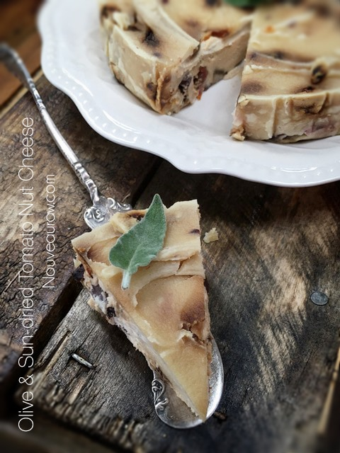
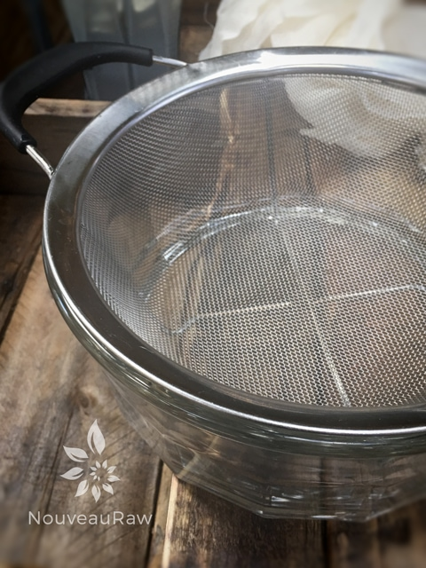
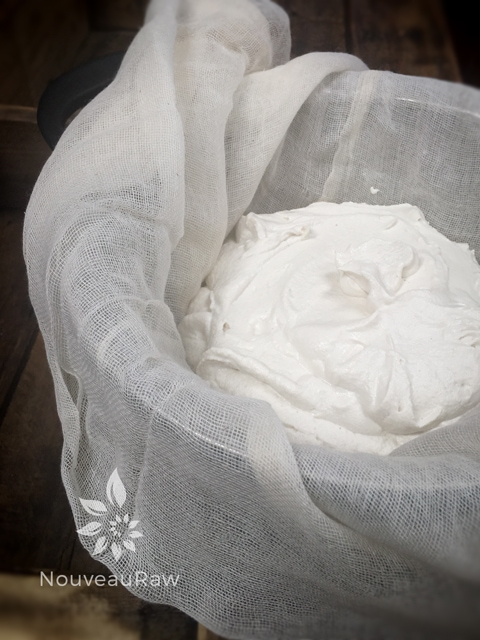
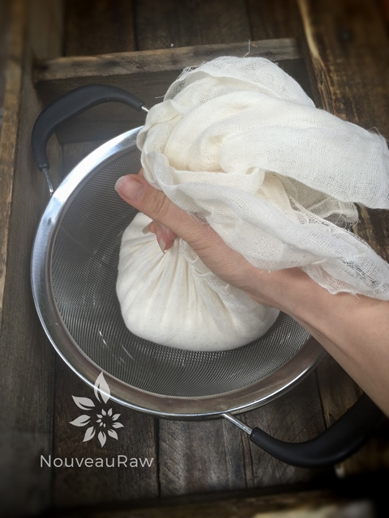
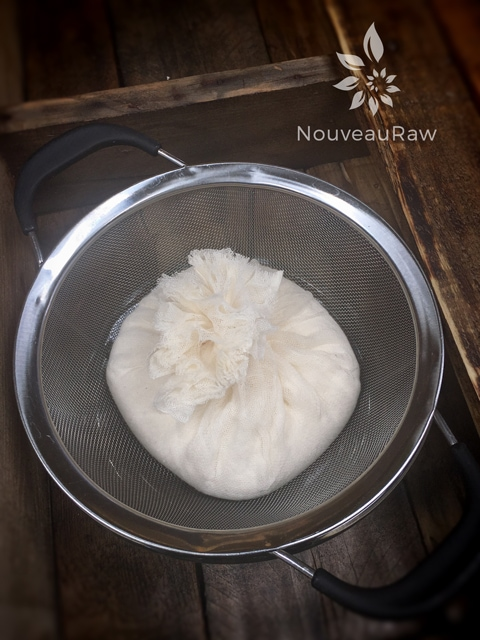
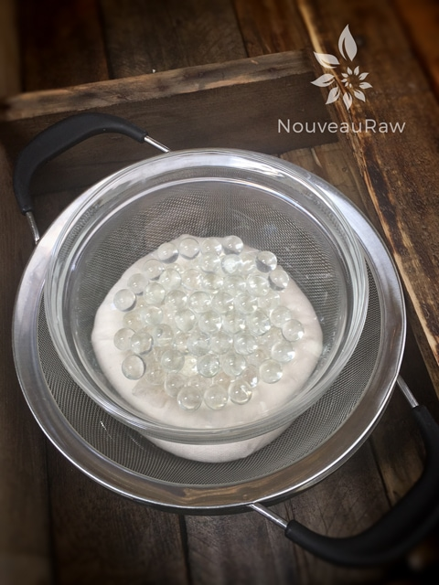
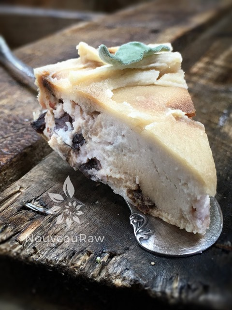

Olive & Sun-dried Tomato Nut Cheese

~ raw, vegan, cultured, gluten-free ~
I originally posted this recipe in 2010. I have made it several times over but thought that I would finally update the photos and make a slight modification in the ingredient list.
When I first created this recipe, I used 2 cups of macadamia nuts. But over the years, the price just keeps on rising, without my pocketbook following suit. So I have been using just one cup of macadamia nuts and one cup of cashews.
The flavor has basically remained the same, but it doesn’t deplete my bank account as much. If cost isn’t an issue for you, use 2 cups of macadamia nuts. Both versions are delicious. The love affair with macs is that they add a buttery flavor and a subtle sweetness.
One thing I have come to learn with mac nuts is always testing them, even before purchasing them (if possible). Due to their high-fat content, they are more prone to going rancid. Never purchase bulk macadamia nuts–who knows how long they have been sitting in the store aisle, at room temperature? That’s my opinion, anyway.
They need to be protected from moisture, otherwise, the nuts will lose their crispness and have a shorter storage life. Oxygen will cause rancidity if the exposure is prolonged. Personally, once I bring them home, they go straight into a recipe or into the freezer. Technically, cold storage is not necessary when macadamias will be eaten within a week or two, but I like to protect my investments. You will know when they have turned; they will often take on an unpleasant bitter taste, and your nose will pick up on the off odor that they create. It’s time to get busy in the kitchen. Grab your apron, and I will meet you there. I hope you enjoy this recipe. Many blessings, amie sue
 Ingredients:
Ingredients:
Yields 6″ cheese wheel
- 1 cup raw macadamias, soaked 4 hours
- 1 cup cashews, soaked
- 1 cup water
- 1 tsp probiotic powder
Preparation:
- First and foremost, make sure all of the utensils and pieces of equipment you use for culturing are sterilized, to avoid growing bad bacteria.
- If at any time you see mold–fuzzy, black, or pink–it will need to be tossed.
- Blend all ingredients in a high-speed blender until smooth.
- Place the mixture in a strainer that has been lined with cheesecloth, and place a weight on top. The weight should not be so heavy that it pushes the cheese through the cloth, but heavy enough to gently start to press the liquid out.
- Leave to ferment for 48 hours at room temperature.
Once fermentation is complete, stir or process in the following ingredients:
Then stir in the following:
- 1/4 cup Kalamata olives
- 1/2 cup sun-dried tomatoes, soaked 2 hours and drained
Assembly:
- I used a 6″ Springform pan to mold this cheese. I lined it with plastic wrap and placed the mixture within the ring, smoothing it out.
- Place in the refrigerator to firm up a little. This is best done overnight.
- You can enjoy the cheese as-is, or place in the dehydrator to create a rind on the surface. That is what I did to create the look in these photos.
- Remove the cheese wheel and place it on the non-stick sheet that comes with the dehydrator.
- Dehydrate at 145 degrees for 1 hour, then reduce to 115 degrees for roughly 8 hours.
- Slice and enjoy with crackers, on bread, or as-is.





